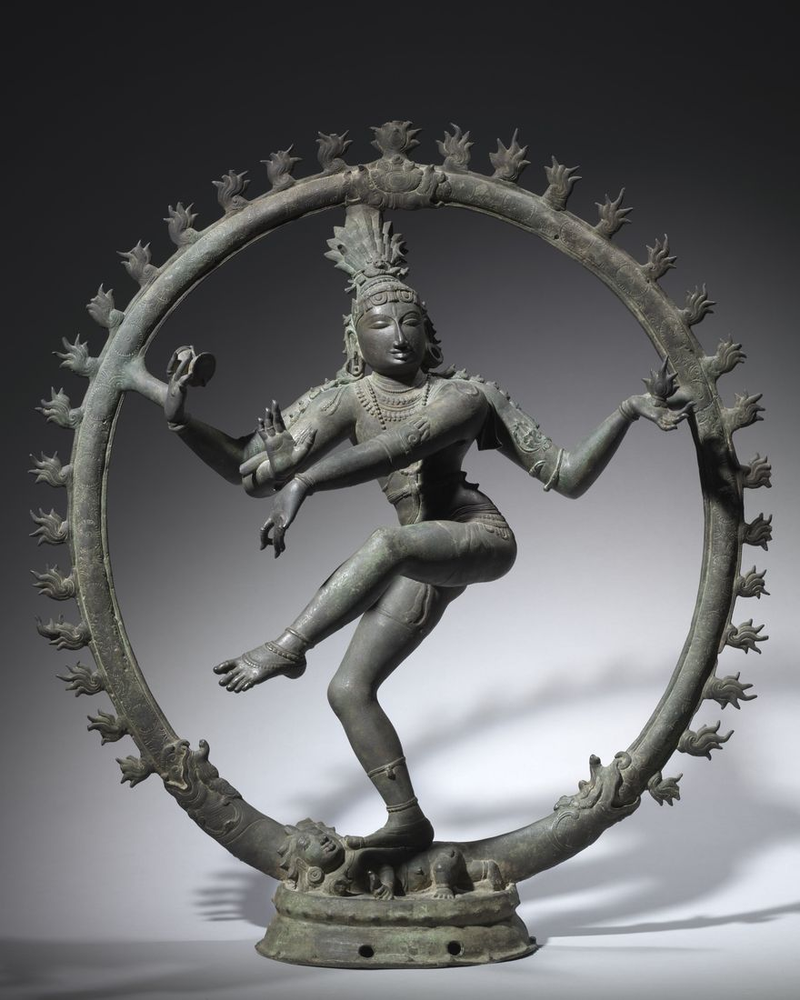

KALĀ
Three journeys through Indian art — in time, across the land, and where two traditions meet.

Timeline
Kāla
An interactive timeline: walk through ten eras and twenty-eight artifacts, from the Dancing Girl of Mohenjo-daro to the Santhal Family — deep-zoom photographs and four real 3D museum scans.
Enter the timelineArt map
Deśa
An interactive atlas of 35 places where Indian art was made — Bhimbetka to Santiniketan — with filters, full-resolution images and animated trails that show how styles travelled.
Open the atlasFusion
Saṅgam
Warli meets Kalamkari: our original artwork “The Tree of Life and the Tarpa Dance”, explorable layer by layer, with a comparison of the two styles and a studio to make your own fusion.
See the fusionOne idea, three interactive works.
Each journey is a complete website of its own, built by hand in HTML, CSS and JavaScript, sharing one design language — a dark museum lit in gold. Together they move from when Indian art was made, to where, to how its traditions can meet today.
| Journey | The idea | What's inside | ||
|---|---|---|---|---|
| i. | Interactive Timeline with ArtifactsKāla | An interactive digital timeline with clickable virtual replicas of key artifacts from different periods of Indian art. | A horizontal museum walk through 10 eras and 28 artifacts; deep-zoom 2K+ photographs; 4 rotatable 3D scans; filterable index. | Kāla → |
| ii. | Interactive Art MapDeśa | An interactive digital map of key locations in Indian art history, with images, descriptions and historical context. | A custom map with official Survey of India boundaries; 35 places; filters by art form and age; 4 animated trails of influence. | Deśa → |
| iii. | Regional Painting FusionSaṅgam | An artwork combining elements of two or more regional painting styles, exploring their similarities and differences. | An original Warli × Kalamkari artwork drawn in code, with layer-by-layer deconstruction, a comparison of the two styles and a fusion studio. | Saṅgam → |